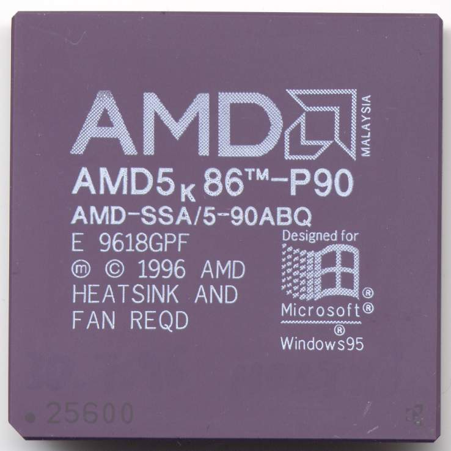
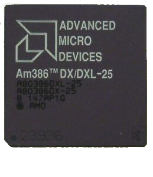
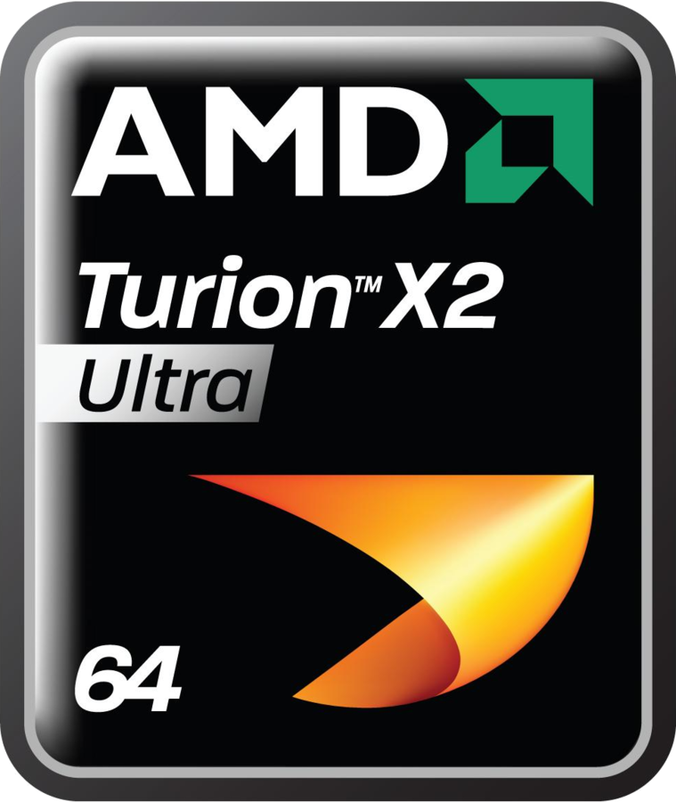
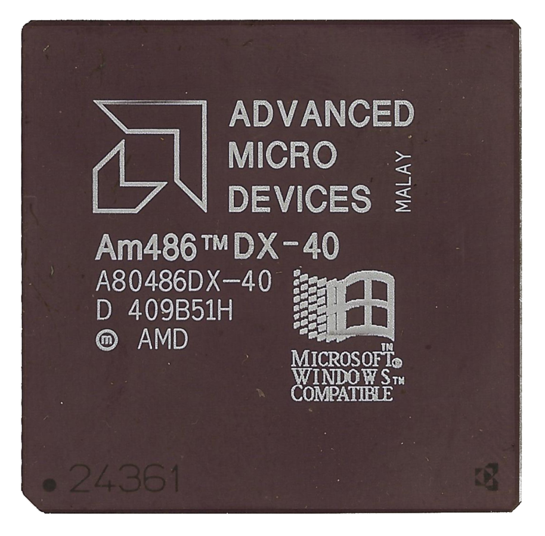
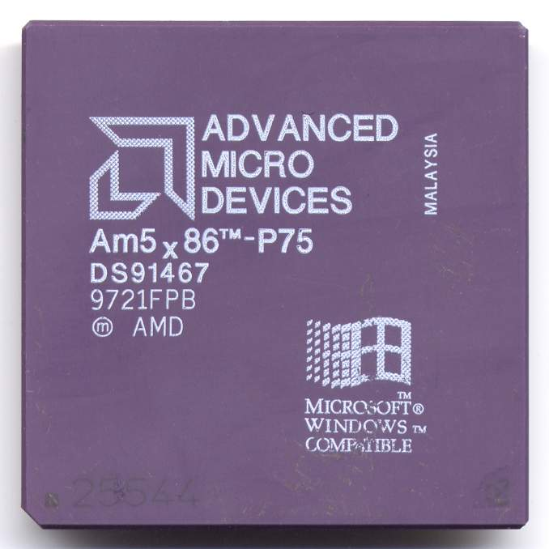

 El AMD K5 es un microprocesador tipo x86, rival directo del Intel Pentium. Fue el primer procesador propio que desarrolló AMD. La arquitectura RISC86 del AMD K5 era más semejante a la arquitectura del Intel Pentium Pro que a la del Pentium. El K5 es internamente un procesador RISC con una Unidad x86- decodificadora que transforma todos los comandos x86 de la aplicación en comandos RISC. Este principio se usa hasta hoy en todos los CPUs x86. En todos los aspectos era superior el K5 al Pentium, sin embargo AMD tenía poca experiencia en el desarrollo de microprocesadores y los diferentes hitos de producción marcados se fueron superando sin éxito. Por esta razón fue necesario esperar un año después de lo planeado para poderlo sacar al mercado. Fue lanzado el 27 de marzo de 1996. Esta versión todavía era de tipo "provisional", y fue conocido como SSA/5, con los errores en el L1-escondidos. En la siguiente fase se comercializó como 5K86 y después se renombró como K5. Debido a la tardía entrada al mercado y la lenta producción así como las bajas cantidades de producción, el K5 más rápido fue un PR166 con 116 MHz. De este modo, AMD no pudo convencer a los fabricantes de PC para que montaran el K5. También la prensa y el comercio dieron por hecho que el K5 era peor. El K5 puede considerase como un fracaso para AMD: "Demasiado tarde". El procesador K6, sucesor del K5, cambió las cosas
 El microprocesador Am386 fue lanzado al mercado por AMD en 1991. Era un procesador con características semejantes al Intel 80386 y compatible 100% con este último, se vendieron millones de unidades de este, y esto posicionó a AMD como un legítimo competidor de Intel, siendo más que solo la segunda fuente de microprocesadores x86 (en ese tiempo llamada la familia 8086). Aunque el procesador estaba esencialmente listo para salir al mercado antes de 1991, Intel mantuvo bloqueado su lanzamiento mediante una demanda judicial. AMD había sido el segundo fabricante de los diseños de Intel, y la interpretación del contrato por parte de los de AMD era que este cubría todos sus procesadores. Intel, sin embargo, alegaba que el contrato solo cubría los modelos 80286 y anteriores. Después de algunos años, AMD finalmente ganó el caso y el derecho de vender sus Am386. Esto abrió una línea de competencia también en el mercado de los procesadores de 32 bit compatibles con el 80386, reduciendo así el costo de comprar una PC. Mientras que el diseño de Intel 386 llegaba a los 33 MHz, AMD lanzó una versión de 40MHz para ambos de sus microprocesadores 386DX y 386SX, extendiendo el tiempo de vida de la arquitectura. Fue la primera aparición de AMD en solitario en el mercado de los procesadores para el gran público y tuvo un éxito aceptable teniendo en cuenta que el mercado estaba totalmente ocupado por Intel.
 El procesador AMD Turion 64 es una versión de bajo consumo del procesador AMD Athlon 64 destinada a los ordenadores portátiles, y constituye la respuesta comercial de AMD a la plataforma Centrino de Intel. Se presentan en dos series, ML con un consumo máximo de 35 W y MT con un consumo de 25 W, frente a los 27 W del Intel Pentium M. Es compatible con el Socket 754 de AMD y dispone de 512 o 1024 KiB de cache L2 y controlador de memoria de 64 bit integrado.
 El Am486 fue un microprocesador de computadora compatible con el Intel 80486, producido por AMD en los años 1993. En el mercado, Intel venció a AMD por casi cuatro años, pero AMD ofreció sus 486 de 40 MHz al mismo precio o por debajo del chip Intel de 33 MHz, ofreciendo, por el mismo precio, cerca de un 20% de mejora en el desempeño. Los primeros chips del AMD 486 fueron reemplazos para sus contrapartes de Intel que se enchufaban en el mismo zócalo, pero posteriormente AMD duplicó la velocidad del reloj, y además corrían a 3,3 voltios en vez de los 5 V de los procesadores de Intel, lo que limitó su capacidad para actualizar los chips de Intel hasta que en el mercado aparecieron adaptadores de voltaje hechos por terceros. Mientras que los chips competidores del 486 se desempeñaban por abajo del chip equivalente de Intel (como los de Cyrix), los chips de AMD igualaban el desempeño de los de Intel en una base de ciclo por ciclo. Mientras que el Am386 fue usado principalmente por pequeños fabricantes de computadores, por 1994, los chips Am486DX, DX2, y SX2 ganaron aceptación entre los grandes fabricantes de computadores, especialmente Acer y Compaq. La velocidad de reloj más alta de los chips 486 de AMD, proveyeron un desempeño superior a muchos de los primeros Pentium, especialmente los de Pentium 60 y 66 MHz. Mientras que los chips Intel 80486DX4 equivalentes tenían un precio más alto y requerían una pequeña modificación del zócalo, el precio de AMD era más bajo. Inicialmente, los chips DX4 de Intel tenían dos veces el caché que los de AMD, dándoles un desempeño ligeramente superior, pero el DX4-100 de AMD costaba menos que el DX2-66 de Intel. Las series de Enhanced Am486 soportaban nuevas características, como modos extendidos de ahorro de energía, y Caché L1 Write-Back, versiones posteriores tuvieron una mejora a 16 KB de Caché L1 Write-Back.
 El microprocesador AMD 5x86 es un procesador compatible x86 presentado en 1995 por Advanced Micro Devices destinado a ser utilizado en ordenadores basados en un 486. Presentado en noviembre de 1995, el AMD 5x86 (conocido también con el nombre de 486DX5-133, Am5x86, X5-133, es vendido bajo marcas como « Turbochip ») es un procesador 486 "estándar" con un multiplicador interno a 4x, arquitectura de 0'35 micras y una caché L1 de 16KB, permitiéndole funcionar a 133 MHz en sistemas para procesadores 486 DX2 o DX4 sin multiplicador. El 5x86 tenía una memoria caché L1 de tipo write-back de 16 kB, siendo casi todos los demás de 8 kB. Algunos modelos salieron a 150 MHz con multiplicador de 3x producidos por AMD, siendo su denominación la de Am5x86-P90 por asemejarse en potencia a un Intel Pentium de 90MHz, pero se vieron muy pocas unidades en el mercado. El socket 3 no fue concebido para tener un multiplicador 4x, AMD hizo que el 5x86 buscara un multiplicador 2x en la placa base, interpretándolo como una multiplicador 4x. Entonces, para utilizar un 5x86, se debía configurar la placa base con el multiplicador a 2x, lo que haría funcionar realmente el 5x86 a 4x. El chip se adapta físicamente en un socket 486 más antiguo como el socket 1 o 2, o el socket original con 168 contactos, pero para ello se necesita un regulador de tensión ya que el chip AMD funciona a 3.3 voltios. La combinación de una mejor frecuencia de reloj y de la memoria caché de tipo write-back permitió al 5x86 igualar e incluso sobrepasar ligeramente un procesador Pentium a 75 MHz. Además, como fue concebido con base en un 486, era compatible con sistemas más antiguos, lo que perjudicaba ligeramente a su rival más rápido, el Cyrix 5x86. El procesador overclockeado a 160 MHz, dando una velocidad parecida al Pentium de 90MHz. Aunque se llegó a overclockearlo hasta 200 MHz, no era muy realizable porque muy pocas tarjetas de video podían funcionar en un bus VESA a 50 MHz (si bien en placas PCI no existe este problema, lo cierto es que nunca se lograron los 200MHz). El 5x86 era conocido por ser el primero en utilizar el P.Rating. Ya que el 5x86 era el equivalente a un Pentium a 75 MHz, AMD lo lanzó con la denominación « AM5x86-P75 ». Las ventas del Am5x86 eran una fuente importante de ingresos para AMD, mientras se demoraba la producción del AMD K5, amenazando la rentabilidad de la compañía. AMD fabricó el procesador 5x86 para un ordenador ordinario hasta 1999. Era popular para ordenadores de oficina, apareció en muchos ordenadores de distintos fabricantes de portátiles. Muchas empresas vendieron el 5x86 con un regulador de tensión y un conversor de socket, como mejora del 486, que permitía su montaje en casi cualquier placa base para 486. El Am5x86-P75 es el microprocesador más potente que se fabricó compatible con la plataforma 486, superando de largo al Intel 486DX4-100 (el más potente de Intel), especialmente cuando se le aplicaba overclock hasta los 160MHz (40x4) dando un buen repaso incluso a los primeros Pentium.
Desarrollador= Santiago Herbes